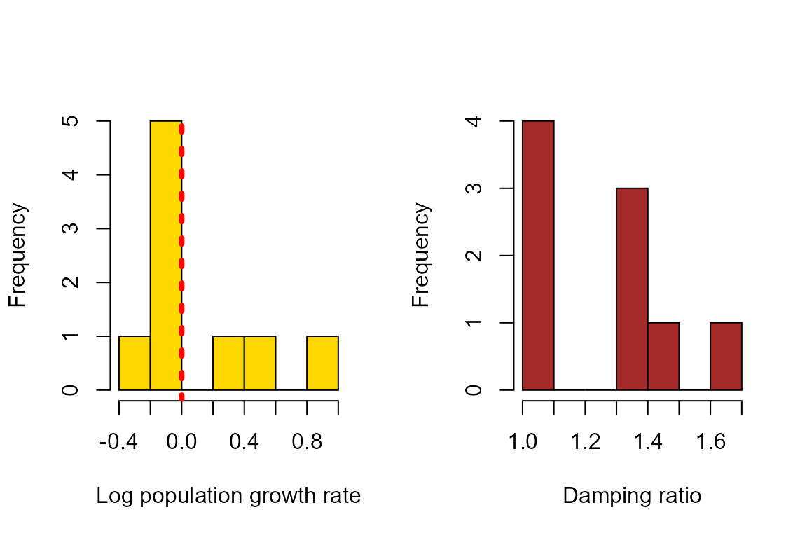
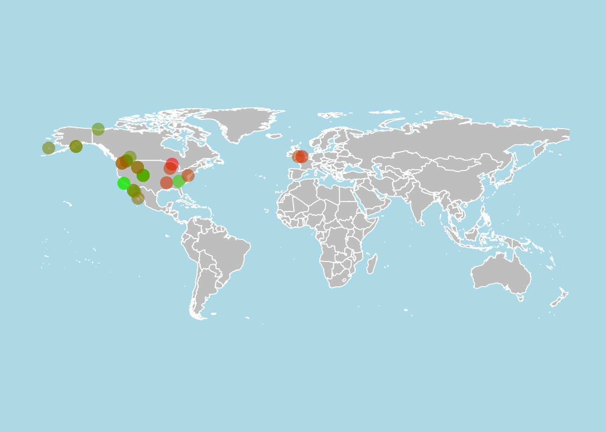

AdditionalRcompadreExercises.RmdThese exercises accompany Rcompadre package vinettes found here. We will use the Rcompadre package for the following items.
For these exercises, we’ll use the Rcompadre, popbio, and maps packages. The packages popbio and maps are available throught CRAN. Instructions for Rcompadre installation can be found here.
This example produces some basic outputs such as the population growth rate (λ) and damping ratio (Caswell 2001) for a subset of species and populations given some selection criteria.
Begin by loading the COMADRE database. The latest version can be found here or pulled using the Rcompadre package with the code below.
load("COMADRE_v.4.20.11.1.RData")Important note: If using the cdb_fetch function, the database is automatically converted to an S4 object.
Once the database is loaded, we’ll use as_cdb (from the Rcompadre package) to make the loaded database into an S4 COMPADRE object. Then, we’ll subset the database to our data of interest: only mean matrices for bony fish from studies of 3 years in duration or longer, and with a matrix dimension of 3 or greater.
comadre <- as_cdb(comadre) # Converts the S3 database format from the website into S4
x <- subset(comadre, MatrixComposite == "Mean" & # Subsets the database based on variables in the metadata
Class == "Actinopterygii" &
StudyDuration >= 3 &
MatrixDimension > 3)The object x is now a version of the COMADRE database object that contains only the matrices that match the search criteria.
These matrices can now be analyzed by applying functions in a loop, or by using lapply. For example, to calculate population growth rate and damping ratio for the subset of matrices, first create an empty data.frame to accommodate the output using popbio.
output <- data.frame(lambdas = rep(NA, length(x$mat)), damps = rep(NA, length(x$mat)))
for (i in 1:length(x$mat)){
output$lambdas[i] <- Re(eigen(x$mat[[i]]@matA)$value)[1]
output$damps[i] <- damping.ratio(x$mat[[i]]@matA)
}Let’s examine the output.
output
#> lambdas damps
#> 1 1.5061504 1.303947
#> 2 0.7459078 1.432266
#> 3 0.9176391 1.397521
#> 4 1.3501445 1.697755
#> 5 2.3156105 1.303005
#> 6 0.9091956 1.031997
#> 7 0.9027406 1.027850
#> 8 0.9140835 1.035914
#> 9 0.9999592 1.005268These parameters are presented in the same order as the metadata so we could also add the species name to this data.frame.
data.frame(Species = x@data$SpeciesAccepted, output)
#> Species lambdas damps
#> 1 Ammocrypta pellucida 1.5061504 1.303947
#> 2 Catostomus platyrhynchus 0.7459078 1.432266
#> 3 Cottus sp. 0.9176391 1.397521
#> 4 Erimyzon sucetta 1.3501445 1.697755
#> 5 Hybognathus argyritis 2.3156105 1.303005
#> 6 Oncorhynchus tshawytscha 0.9091956 1.031997
#> 7 Oncorhynchus tshawytscha 0.9027406 1.027850
#> 8 Oncorhynchus tshawytscha 0.9140835 1.035914
#> 9 Sprattus sprattus balticus 0.9999592 1.005268We can also plot the population growth rates and damping ratios derived from these matrices. In the plot below, the vertical, dashed red line indicates population growth rate = 1 (or log(λ) = 0).
par(mfrow = c(1,2))
hist(log(output$lambdas),xlab = "Log population growth rate", col = "gold", main = "")
abline(v=0,col = "red", lwd = 4, lty = 3)
hist(output$damps, xlab = "Damping ratio", col = "brown", main = "")
This example produces on a world map with the viability (population growth rate λ > 1, λ = 1, λ < 1) of a subset of studied populations given some selection criteria and color-codes the location of each population according to the value of λ.
First, we’ll subset mean matrices for all Carnivora in the wild in the northern hemisphere, with no issues for survival > 1, for which matrices have been split into A = U + F + C, and for which reproduction was explicitly modeled.
x <- subset(comadre, MatrixComposite == "Mean" &
Order == "Carnivora" &
MatrixCaptivity == "W" &
Lat > 0 &
SurvivalIssue < 1 &
MatrixSplit == "Divided" &
MatrixFec == "Yes")The object x is now a version of the COMADRE database object that contains only the matrices that match the search criteria. To calculate population growth rate for the subset matrices, we’ll first create an empty variable to accommodate the output from lambda calculations.
x@data$lambdas <- NAThen, we’ll create a for loop to examine each matrix in turn. Here, it may be advisable to use the function tryCatch as a wrapper to cope with the situation if/when the function in the loop fails.
for (i in 1:length(x$mat)){
tryCatch({
x@data$lambdas[i] <- Re(eigen(x$mat[[i]]@matA)$value)[1]
}, error = function(e){})
}Now, we’ll create a vector of color hex codes that can be applied according to the estimate of λ. This is done using the colorRampPalette function to go from green for high values of λ to red for low values of λ. Here, paste is used to append a value of 90 to the hex codes to allow transparency for aesthetic reasons.
rampfunc <- colorRampPalette(c("green", "red"))
colVect <- rampfunc(100)
colVect <- paste(colVect, "90", sep = "")
s1 <- seq(min(x@data$lambdas, na.rm=TRUE),max(x@data$lambdas, na.rm=TRUE),
length.out = 100)Using the maps package, we’ll plot the world map and overlay the points from our data, color coded by value of λ. In this case, the points are jittered slightly to improve visibility of nearby populations.
par(mfrow = c(1,1))
{map("world", col = "gray", fill = TRUE, bg = "light blue",
xlim = c(-175, 176), ylim = c(-60, 85), border = "white")
points(jitter(x@data$Lon, 0.6), jitter(x@data$Lat, 0.6),
col = colVect[findInterval(x@data$lambdas, s1)], cex = 2, pch = 16)
}